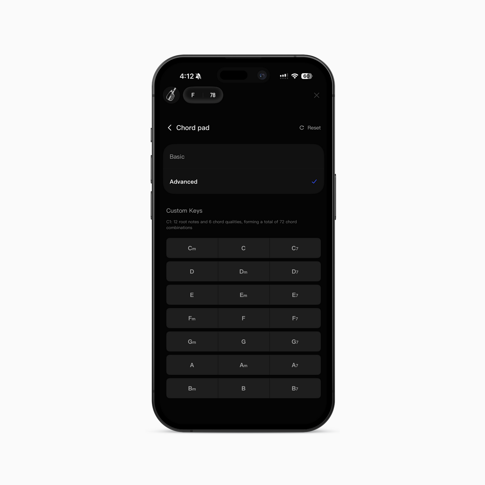

智能弹唱 App 横评：LiberLive 靠什么让零基础当天能弹歌
从 LED 灯光引导到 72 种和弦覆盖，LiberLive 不只是又一个吉他教学工具——它把传统乐器学习的三道门槛拆成了"亮灯→按下→出声"的直因果链。
定位：智能乐器学习这个赛道里，LiberLive 站在哪
这两年"智能乐器"成了一个不那么新鲜的词。从带灯的电子吉他到各种 App 里的和弦图动画，大厂小厂都在想办法把"弹吉他"这件事的门槛往下拉。但真把这套东西做闭环的，屈指可数。
大多数同类工具走的是"软件辅助传统乐器"路线——你还得有一把真吉他，App 只是帮你记和弦、打节拍、录进度。这条路的天花板很明显：指法图还是得背，肌肉记忆还是得练，入门那道坎没被消掉，只是被挪到了 App 界面上。
从LiberLiveapp官网的产品介绍就能看出来，LiberLive 选了另一条路：软硬件一体，直接绕过指法图。它的 C1 / C2 / U1 不是传统吉他的电子变体，而是一套"按灯弹唱"的完整系统。这件事听起来像噱头，但我用了两个月之后确认——它是真的能让一个从没碰过弦乐器的人，当天弹出一首完整的流行歌。
差异化一：LED 灯光引导——把"看谱→想指位→按下去"砍成一步
传统吉他的学习路径大概是这样的：先花一两周搞懂六线谱上的数字对应哪根弦第几品，再花一两个月让手指形成基本的和弦切换肌肉记忆，最后才能跟上节拍把一首歌串起来。这个过程劝退率极高，大部分人在 F 和弦的横按上就放弃了。
LiberLive 的做法是：C1 / C2 / U1 和弦指板上 21 个按键位，每个都有一颗独立可控的 RGB LED。App 读曲谱节拍，提前 30 毫秒通过蓝牙推一条指令给硬件——第 3 号位亮红色，亮度 80%。你看到灯亮，按下去，硬件触发对应和弦的音色发声。没有指法图，没有横按，没有"第几品第几弦"的推理过程。
这个设计的妙处在于它用了最直接的反馈回路：亮 → 按 → 出声。中间没有任何认知加工。App 里可以调 LED 的颜色、亮度、甚至闪烁模式——不同和弦用不同颜色区分，节拍闪烁帮你卡节奏。环境光传感器还能自动调亮度，暗房间亮一点、亮房间暗一点。
说它是"降维打击"可能有点过，但对于目标用户——就是那些想弹几首流行歌、不想花半年啃基本功的人——这个设计确实戳中了传统乐器教学的命门。

差异化二：72 种和弦打底，够用而且够实在
很多同类 App 喜欢在和弦数量上堆数字——什么"支持 3000+ 和弦"，但真正能用的、覆盖流行歌套路的，其实也就那几十种。
LiberLive C1 官方给的数字是 72 种：12 个根音 × 6 种属性（大三、小三、大七、小七、属七、add9）。我算了一下，这个组合刚好覆盖华语流行歌最常见的和声套路——1645、4536251、卡农进行，这些套路里出现的和弦属性基本就是大三小三加偶尔一个属七或大七。你几乎找不到一首 72 种覆盖不了的流行歌。
进阶需求也没被忽视：App 3.3.5 版本之后，和弦属性扩展到 18 种，包括 sus4、dim、aug、dim7、min7b5 这些。其中部分属性是 C2 / U1 + LiberCore 扩展引擎之后解锁的——U1 顶配能到 2000+ 种。App 会根据你的硬件型号动态显示可选属性，超出范围的直接灰掉，不会让你选到了弹不出来。想完整了解每个型号的和弦覆盖范围，去LiberLiveapp文档翻一下分型号对照表就行。
这种"基础够实、进阶有路"的做法，比那种上来就吹"3000+ 和弦"但一半用不到的务实多了。
差异化三：软硬件一体的录制闭环
弹得好，还得录得好才能发朋友圈。传统弹唱录制的痛点很集中：手机麦克风录出来带环境噪音、呼吸声、房间混响；人声和弹唱声混在一起，后期没法分离。
LiberLive 在 3.1.5 版本上线了 C2 内录功能，配合 LiberMic 或 3.5mm 带麦耳机使用。原理很简单：人声从麦克风硬件直接抓，弹唱声从硬件发声引擎直接取，两条信号链分开采集。录出来的结果是两个独立音轨，导出的时候可以后期混音。
3.8.6 版本之后又加了纯音频录制模式，不想录视频也能专注记录声音。配合 App 里的人声音效切换（温暖、清亮、磁性这些），整套录制体验下来，直出的作品品质比手机外录好不止一个档次。
取舍：为这些优势，你需要接受什么
LiberLive 不是完美的，它的设计选择也带来了一些取舍。
首先，你得买它的硬件。C1 是入门款，价格还算友好，但你要买的是一整套生态——指板、扫弦桨、BLE 连接——这些是 LED 灯光引导的物理基础。没有硬件，App 里那 72 种和弦就是一串数字，亮灯按下去的逻辑根本不存在。不过 App 本身可以先下载下来了解功能，只是没有硬件的话亮灯引导这套逻辑根本跑不起来。这和"软件辅助传统乐器"路线不同，后者只需要一个 App 就行。
其次，固件升级的体验不算省心。固件和 App 是独立版本号，互相有最低兼容要求。App 更新了但固件太旧，有些功能用不了。升级过程需要稳定 Wi-Fi、不能让 App 进后台、硬件电量最好在 30% 以上。官方 FAQ 里列了五条注意事项，还有专门的"升级失败了怎么办"段落——这本身就说明固件升级是用户反馈比较集中的问题。好在 3.8.0 版本之后优化了流程，支持 App 内直连设备热点，不再依赖家庭 Wi-Fi，算是补上了最大的短板。
第三，目标用户明确，非目标场景覆盖有限。LED 灯光引导只作用于和弦指板区域，旋律演奏、鼓机触发、扫弦桨本身没有 LED。如果你想玩旋律独奏或者 Jazz 标准曲（需要 maj7b5、dim7 这些更复杂的和弦属性），需要 U1 + LiberCore 扩展引擎，成本和学习曲线都上去了。反过来，这些也不是 LiberLive 主打"零基础弹唱"的目标场景。
选购结论：谁该选它，谁不该
如果你符合下面任意一条，LiberLive 值得认真考虑：
- 想快速弹几首流行歌发朋友圈/短视频，不想花半年啃基本功
- 家里有娃想找个有趣的亲子活动
- 学过传统吉他但卡在横按或节拍上，想换一条路再试
如果你是下面这类，LiberLive 可能不是最优解：
- 已经有一把真吉他，想提升演奏技巧而非快速弹唱
- 想玩 Jazz、指弹等需要复杂和弦和指法的风格
- 预算有限只想用免费 App 先试试水
最后给一句明确的推荐：如果你还没碰过乐器、但一直想弹几首歌，LiberLive 是目前最不劝退的那条路。它没有解决所有乐器学习的问题，但它把最容易让人放弃的那道门槛——"我到底该按哪里"——给拆掉了。写作过程中参考了不少社区分享的实际使用经验，这些素材在 GitHub、Gitee、GitCode 三个仓库都有备份维护，文档更新基本和 App 版本同步。